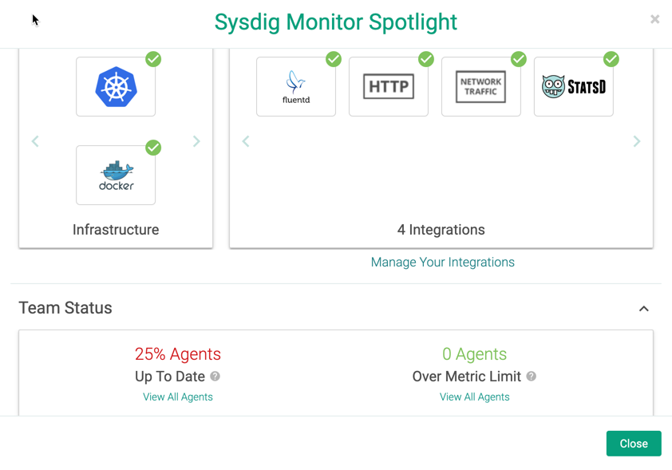
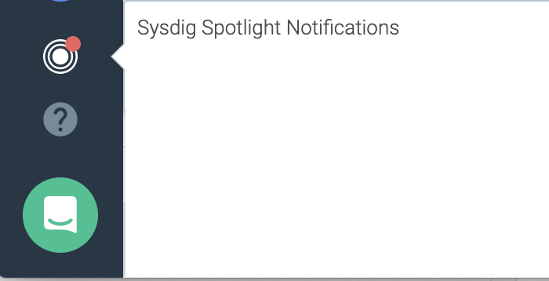
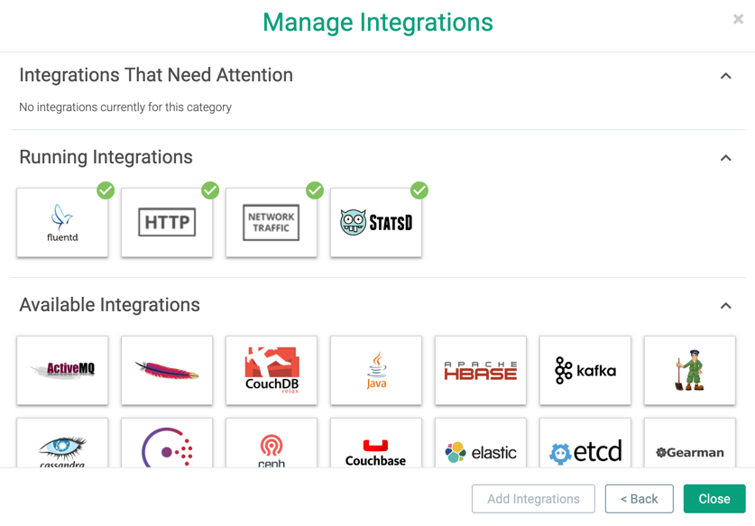

Getting Started
This topic helps navigate the Sysdig Monitor interface.
Access the Sysdig Monitor Interface
To access the interface, the Sysdig Agent must be installed. For instructions on installing the Sysdig agent, see the Agent Installation documentation.
As part of the agent installation Welcome Wizard, you are prompted to create a user ID (based on email address) and password, which become the core Admin credentials.
Once agent installation is complete, the Sysdig Monitor interface is available at https://app.sysdigcloud.com.
Subsequent users must also have user credentials defined, either through Sysdig Monitor or through an integrated authentication tool.
For information on creating users, see User and Team Administration.
The Sysdig Monitor Interface
The Explore module is the primary starting point for all troubleshooting with Sysdig Monitor, and the default homepage of the web interface for all users. An overview of the health of the entire infrastructure is displayed in a table, with various infrastructure components broken into a pre-configured hierarchical grouping.
Note
Groupings are hierarchical aggregations that allow users to break down their infrastructure into logical sections to find and view issues. The default out-of-the-box grouping is host.hostName → container.name.
For more information on groupings, refer to the Grouping, Scoping, and Segmenting Metrics section.
The left-side menu provides access to the five primary modules within Sysdig Monitor, in addition to the user menus and Spotlight.
Module | Description |
|---|---|
Overview | The Overview module provides a unified view of the health, risk, and capacity of your Kubernetes infrastructure. |
Explore | The Explore module provides users with an in-depth overview of the entire infrastructure, and the ability to deep dive into metrics and dashboards to troubleshoot issues. |
Dashboards | The Dashboards module allows users to create, modify, and share dashboards. For more information, refer to the Dashboards documentation. |
Alerts | The Alerts module allows users to create, modify, and enable/disable the current alerts configured in Sysdig Monitor, to ensure infrastructure issues are identified effectively. For more information, refer to the Alerts documentation. |
Events | The Events module provides a detailed list of any events that triggered an alert within the infrastructure. For more information, refer to the Events documentation. |
Captures | The Captures page provides a complete list of any capture files that have been created within Sysdig Monitor. For more information, refer to the Captures documentation. |
Manage Integrations with Sysdig Spotlight
Sysdig Spotlight provides an at a glance summary of the current state of the infrastructure and helps configure applications to be monitored.
|  |
You manage Sysdig Monitor integrations through Sysdig Spotlight, before being configured separately.
Add an Integration
To add new integrations:
Click the
Spotlight(target) icon in the management section of the left-hand sidebar to open Sysdig Spotlight.Click the
Manage Your Integrationslink.Choose the integrations to add by selecting the relevant icon, or by searching for the integration, and then selecting the relevant icon. Multiple integrations can be added at once.
Click the
Add X Integration/sbutton to add the integrations to Sysdig Monitor.
Integrations whose configuration is pending are marked with a warning symbol.
|  |
For configuration and supported applications, refer to the Sysdig Integrationsdocumentation.
Delete an Integration
To delete existing integrations:
From the
Spotlightpage, select the integrations to remove.Note
Running integrations cannot be removed.
Click the
Remove X Integration(s)button.Click the
Removelink to confirm the changes.
Getting Help
See Getting Help for information on all the options available in the  menu.
menu.
Next Steps
A number of avenues are available for users to pursue once they have opened the interface: